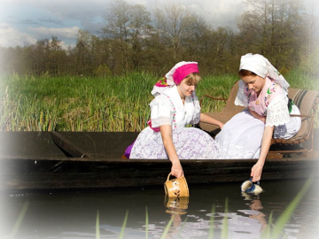
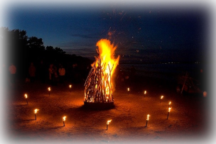
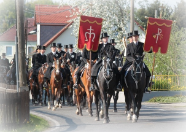

|
Osterwasser
Das Osterwasser ist seit vielen Jahren ein Symbol für
Fruchtbarkeit und Schönheit, das einen vor Krankheiten schützen und für
ewige Jugend sorgen soll. Am Morgen des Ostersonntags waschen sich
daher viele Frauen in einem Bach oder holen dort Wasser, um die
heilenden Kräfte des Wassers für sich nutzen zu können. Zurück geht
dieser Brauch auf eine vorchristliche heidnische Entstehung, die in
manchen Teilen in Deutschland damit zelebriert wird, dass man den
Brunnen in seinem Dorf beschmückt und an die Wichtigkeit des Wassers
gedenkt.
|
|
|
Osterfeuer
Einer der schönsten Bräuche ist vermutlich das Osterfeuer,
das viele Menschen am Karsamstag, Ostersonntag oder Ostermontag
zusammenbringt. Das Osterfeuer selbst steht für die Sonne, die den
Mittelpunkt unseres Lebens bildet und ohne die ein Leben auf der Erde
nicht möglich wäre. Im Christentum wird das Osterfeuer außerdem als
Symbolik für die Auferstehung von Jesus genutzt, während nach
heidnischem Brauch mit dem Feuer ein für alle Mal der Winter vertrieben
wird.
|

|
|
|

|
Osterreiten
Am Ostersonntag findet das Osterreiten, auch bekannt unter
dem Namen Osterritt, statt. Diese Ostertradition stammt aus dem
Christentum. Mehrere Pferde und ihre Reiter streifen dabei durch das
Dorf oder die Stadt, um die Botschaft, dass Jesus wieder auferstanden
ist, zu verkünden.
|